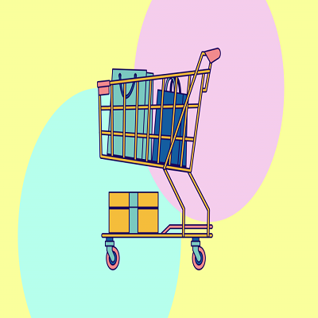

<div style="margin-top: 20px;">
    <div class="container">
        <div class="text-center">
            <h2 class="section-heading text-uppercase">Dashboard</h2>
        </div>
        <br>
        <ul class="timeline">
            <li><a href="../../assets/img/1.jpg" target="_blank">
                    <div class="timeline-image"></div>
                </a>
                <div class="timeline-panel">
                    <div class="timeline-heading">
                        <h4 class="title">Categorias Totais: {{data?.categoria}}</h4>
                    </div>
                    <div class="timeline-body">
                        <p class="text-muted"> É possível cadastrar novas categorias que serão 
                            vinculadas a algum produto ou editar categorias já existentes, informando 
                            apenas seu nome. Também é possível excluir categorias que não possuem produtos utiizando as mesmas.
                        </p>

                        <button class="button" [routerLink]="['/fornecedora/categoria']">Ver Categoria</button>

                    </div>
                </div>
            </li>
            <li class="timeline-inverted">
                <a href="../../assets/img/2.jpg" target="_blank">
                    <div class="timeline-image"></div>
                </a>
                <div class="timeline-panel">
                    <div class="timeline-heading">
                        <h4 class="title">Produtos Totais: {{data?.produto}}</h4>
                    </div>
                    <div class="timeline-body">
                        <p class="text-muted">Também é possível cadastrar produtos que necessitam possuir 
                            um nome, preço, descrição e uma categoria que será selecionada a partir 
                            das que já estão cadastradas no sistema. Também será possível editar e 
                            excluir os produtos. Ao clicar em editar, o usuário poderá modificar qualquer 
                            um dos atributos que foram citados acima, e ao clicar em excluir, o sistema irá 
                            deletar aquele produto após o usuário confirmar em "sim".
                        </p>

                        <button class="button" [routerLink]="['/fornecedora/produto']">Ver Produto</button>
                    </div>
                </div>
            </li>
            <li>
                <a href="../../assets/img/3.jpg" target="_blank">
                    <div class="timeline-image"></div>
                </a>
                <div class="timeline-panel">
                    <div class="timeline-heading">
                        <h4 class="title">Vendas Totais: {{data?.venda}}</h4>
                        <div class="timeline-body">
                            <p class="text-muted">A visualização dos pedidos que já foram feitos pelos clientes, 
                                mostrando detalhes do pedido, como o total, os produtos comprados e os 
                                dados do comprador.
                            </p>

                            <button class="button" [routerLink]="['/fornecedora/venda']">Ver Venda</button>
                        </div>
                    </div>

                </div>
            </li>
        </ul>
    </div>
</div>
